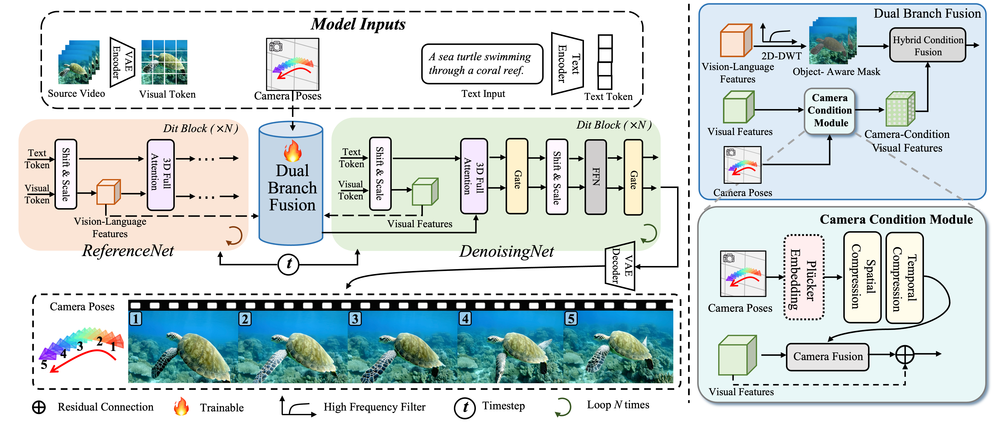

MoCa: Modeling Object Consistency For 3D
Camera Control In Video
Generation
Demonstration of Teaser. This figure outlines the core requirements for high-quality
camera-controllable video generation: consistent object view, appearance, and motion. The foreground object should
remain fully visible and retain its structure during camera movement, with stable texture and natural motion.
Existing methods often fail to satisfy all three aspects simultaneously, whereas our approach demonstrates strong
performance across all criteria.
Abstract
Camera control is important in
text-to-video generation for achieving realistic scene navigation and view synthesis. This control is defined by
parameters that describe movement through 3D space, thereby introducing a 3D consistency into the generation
process. A core challenge for existing methods is achieving 3D consistency within the 2D pixel domain. Strategies
that directly integrate camera conditions into text-to-video models often produce artifacts, while those relying
on explicit 3D supervision face generalization issues. Both limitations originate from the gap between the 2D
pixel space and the underlying 3D world. The key insight is that the projection of a smooth 3D camera movement
produces consistency in object view, appearance, and motion across 2D frames. Inspired by this insight, we propose
MoCa, a dual-branch framework that bridges this gap by modeling object consistency to implicitly learn 3D
relationships between camera and scene.To ensure view consistency, we design a Spatial-Temporal Camera encoder
with Plücker embedding, which encodes camera trajectories into a geometrically grounded latent representation. For
appearance consistency, we introduce a semantic guidance strategy that leverages persistent vision-language
features to maintain object identity and texture across frames. To address motion consistency, we propose an
object-aware motion disentanglement mechanism that separates object dynamics from global camera movement, ensuring
precise camera control and natural object motion. Experiments show that MoCa achieves accurate camera control
while preserving video quality, offering a practical and effective solution for camera-controllable video
synthesis.
Framework

Framework of MoCa. The overview of MoCa that focus on accurate modeling object
consistency to enhance camera-controlled video generation. To maintain view consistency, we utilize the Camera
Condition Module with Plücker embedding to align camera rays with pixel-level visual representation. For
appearance consistency, a semantic guidance strategy employs ReferenceNet’s vision-language features to stabilize
objects. Motion consistency is achieved by disentangling video motion into camera movement and object dynamics.
3D Understanding
Our method effectively distinguishes between foreground objects and the background objects while maintaining smooth camera motion, demonstrating that our model successfully learns an implicit 3D relationship between the camera and the scene.